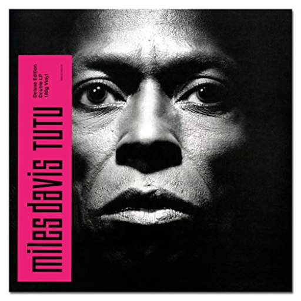

Lalo Schifrin - Bullitt: Original Motion Picture Soundtrack - LP Vinyl Album  Limited 180gm audiophile vinyl LP pressing. Lee Dorsey began his career as a lightweight boxer in the early 1950s and moved on to become an influential African American pop and R&B singer during the 1960s. His successful period began when he met songwriter and record producer Allen Toussaint. In 1970, Dorsey recorded the Yes We Can album again with Toussaint together with the support band The Meters. Several of the songs were covered by major artists who scored hits with them later that decade; 'Yes We Can' by The Pointer Sisters and 'Sneakin' Sally Thru The Alley' by Robert Palmer. The other songs are straight up funky tracks and have a variety of styles and sounds. Included are the protest soul recording 'Who's Gonna' Help Brother Get Further' and the somewhat hilarious comedy song 'Would You'. All in all it stands as a great soul album for that time. |  BLACK FRIDAY RSD 2013 Limited MONO official remastered Columbia edition of the classic jazz LP. Essential !!  tutumiles davis 180g Vinyl Double LP with an an extra LP of live performances by the Miles Davis Octet of the Nice Jazz Festival of 1986 only available on the CD version of Tutu Deluxe.The packaging is a replica of the original vinyl album, including stickers, LP labels, Irving Penn’s beautiful and iconic photographs  2LP set, on 180-gram audiophile vinyl. Reissued in 2016! Live at the Fillmore West in San Francisco in April 1970. Originally only released in Japan.  Limited 180gm audiophile vinyl LP pressing. Filles de Kilimanjaro (named after the Kilimanjaro African Coffee) is one the many masterpieces American composer and trumpeter Miles Davis recorded during his lifetime. It can be seen as a transitional album, right between his 'acoustic' and 'electric' period. He recorded this incredible work of modern jazz together with music greats such as Wayne Shorter, Herbie Hancock, and Chick Corea. The five different songs all fitting together as expressions of the same basis piece. The recording sessions made the musicians think and play in a different way. These kind of improvisations were given the listener a look into the future of jazz. It happens to be the swan song for his second great quintet, but one in which they're showing all their talents for the last time. Adventurous from start to end and filled with funky and bluesy rhythms. |

Julien
Collection Total:
1 937 Items
1 937 Items
Last Updated:
Mar 19, 2022
Mar 19, 2022


 Made with Delicious Library
Made with Delicious Library